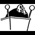

<html>
 <head>
  <title>
   What's with using Pizza Parlors as fronts a la The Pizza Connection in the 90s?
  </title>
  <meta content="Post on /v/Pizzagate archived on 2016-11-25 by heiny002." name="description"/>
  <meta content="What's with using Pizza Parlors as fronts a la The Pizza Connection in the 90s?" property="og:title"/>
  <meta content="Post on /v/Pizzagate archived on 2016-11-25 by heiny002." property="og:description"/>
  <link href="../../page.css" rel="stylesheet"/>
  <meta content="https://voat.pizzagate.hackliberty.org/thumbnails/22/ec/22ecd8a6-5f1b-46bf-96a5-a18ccf53328e.jpg" property="og:image"/>
  <meta content="https://voat.pizzagate.hackliberty.org/v/pizzagate/1434644.html" property="og:url"/>
 </head>
</html>
<body class="dark">
 <div id="container">
  <!-- array (
  'submissionid' => 1434644,
  'creationDate' => '2016-11-25 06:16:09',
  'domain' => 'newyorker.com',
  'formattedContent' => NULL,
  'isAdult' => 0,
  'isAnonymized' => 0,
  'subverse' => 'pizzagate',
  'thumbnail' => '22ecd8a6-5f1b-46bf-96a5-a18ccf53328e.jpg',
  'title' => 'What\'s with using Pizza Parlors as fronts a la The Pizza Connection in the 90s?',
  'url' => 'http://www.newyorker.com/magazine/2009/11/30/post-pizza',
  'userName' => 'heiny002',
  'archivedLink' => NULL,
  'archivedDomain' => NULL,
  'isDeleted' => 0,
) -->
  <div style="text-align:center; font-size:24px; font-weight:bold;">
   Voat /v/Pizzagate Archive
  </div>
  <div class="content" role="main">
   <div class="sitetable linklisting" id="siteTable">
    <div class="submission id-1434644 link type-text" id="submission-1434644">
     <a name="submissionTop">
     </a>
     <p class="parent">
     </p>
     <a class="thumbnail may-blank" href="http://www.newyorker.com/magazine/2009/11/30/post-pizza" target="_self">
      
     </a>
     <div class="entry unvoted">
      <p class="title">
       <a class="title may-blank" href="http://www.newyorker.com/magazine/2009/11/30/post-pizza" tabindex="1" target="_self" title="What's with using Pizza Parlors as fronts a la The Pizza Connection in the 90s?">
        What's with using Pizza Parlors as fronts a la The Pizza Connection in the 90s?
       </a>
       <span class="domain">
        (
        <a href="https://archive.searchvoat.co/search.php?d=newyorker.com">
         newyorker.com
        </a>
        )
       </span>
      </p>
      <p class="tagline">
       submitted
       <time datetime="2016-11-25T06:16:09+00:00" title="11/25/2016 6:16:09 AM">2016-11-25T06:16:09</time> by
       <span class="userattrs">
        <a class="author may-blank" href="https://archive.searchvoat.co/search.php?u=heiny002">
         heiny002
        </a>
       </span>
      </p>
      <ul class="flat-list buttons">
       <li class="first">
        <a class="comments may-blank" href="https://archive.searchvoat.co/v/pizzagate/1434644" rel="nofollow">
         1 comment
        </a>
       </li>
      </ul>
     </div>
     <div class="child">
     </div>
     <div class="clearleft">
     </div>
    </div>
    <div class="clearleft">
    </div>
   </div>
   <div class="horizontal-line">
   </div>
   <div class="commentarea">
    <div class="sitetable nestedlisting" id="siteTable">
     <div class="child id-6921442 comment even" style="">
      <div class="entry unvoted">
       <div class="noncollapsed" id="6921442" style=";">
        <p class="tagline">
         <a class="author may-blank" href="https://archive.searchvoat.co/search.php?u=derram">
          derram
         </a>
         <span class="userattrs">
         </span>
         <time datetime="2016-11-25T06:20:45+00:00" title="11/25/2016 6:20:45 AM">2016-11-25T06:20:45</time>
        </p>
        <div class="usertext-body may-blank-within" id="commentContent-6921442">
         <div class="md">
          <p>
           <p>
            <a href="https://archive.is/NGREo">
             https://archive.is/NGREo
            </a>
            :
           </p>
           <blockquote>
            <p>
             Post-Pizza - The New Yorker
            </p>
           </blockquote>
           <p>
            'Still, for all those years around Foley Square, he is best known for presiding over one of the most consequential trials in federal history: the Pizza Connection case. '
           </p>
           <p>
            ' I don’t see any reason why the system can’t handle this case.” ♦'
           </p>
           <p>
            'He took senior status, with a reduced caseload, in 2002, but he continues to hear cases as a judge on the Second Circuit. '
           </p>
           <p>
            'In all, the trial took seventeen months—the longest criminal trial in the history of the Southern District of New York—and it concluded, fittingly, with gunfire. '
           </p>
           <p>
            'In any event, the judicial assignment is sure to be daunting and lengthy. '
           </p>
           <p>
            <a href="https://vgy.me/GU8hr1.gif">
             This has been an automated message.
            </a>
           </p>
          </p>
         </div>
        </div>
        <ul class="flat-list buttons">
         <li class="first">
          <a class="bylink" href="https://archive.searchvoat.co/v/pizzagate/1434644/6921442" rel="nofollow">
           link
          </a>
         </li>
        </ul>
       </div>
      </div>
     </div>
    </div>
   </div>
  </div>
 </div>
 <div class="footer-container">
 </div>
</body>
